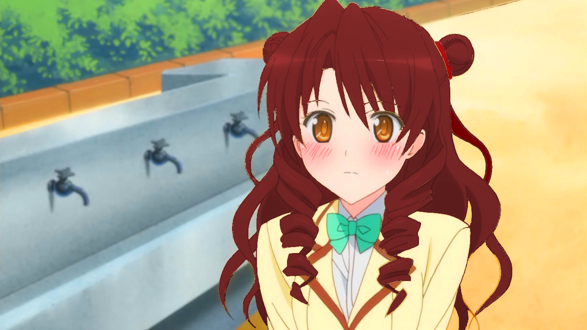

-
Her general apperance is inspired by this recolored image of Saki Tenjouin from the anime
Motto to Love-Ru. (Original Image)

-
Her Gown is based on this dress
 , sold here.
, sold here.
| Name | Miú Aya |
|---|---|
| Codename | Crimson Wolf |
| Nicknames | |
| Characteristics | |
| Species | Human (Maiden) |
| Gender | Female |
| Handedness | Right |
| Birthday | 7:16:5 Kria 01 (age 19) |
| Hometown | Siana, Clerèssia |
| Affiliations | |
| Occupation | Agent |
| Current Affiliation(s) | Clerèssian Intelligence Agency |
| Family | |
| Appearance | |
| Height | 168 cm (5'6") |
| Weight | 63 kg (139 lb) |
| B/W/H | |
| Hair | Deep red: reaching mid-back, usu. worn with chest-length twintail drills in front and long tress in back |
| Eyes | Amber |
| Maiden Abilities | |
| Weapon | ??? (compound bow) |
| Keystone | Square rose quartz ring |
| Specialty | AOE (damage & crowd-control) |
| Element | Wind |
| Rank | A- |
Aya is a mature, fairly no-nonsense kind of girl. Generally level-headed, she nonetheless can be impatient and distant, failing to understand the emotional complexity of a situation. She’s a quick, decisive thinker and isn’t afraid to speak her mind about an issue, unconcerned about offending people. If you need an honest, to-the-point perspective, she a good person to ask, though be prepared for her somewhat abrasive remarks. Despite this, she’s a natural leader, and her skills make up for her rough personality, and she’s generally well-liked and respected. When her followers manage to annoy her, she has been known to simply dismiss them and take on the problem herself.
She wears her dark red hair in a drill style, with a small curl framing each side of her face and a single wide tress to the middle of her back.
Her Maiden gown is a black V-neck dress with short, frilled sleeves that ends in a ruffle skirt just above her knees. A thin amber sash is tied in a bow under her chest.
When she was in high school, Aya wore her hair slightly shorter. Her high school uniform was a simple yellow/cream blazer with a black skirt.
| HP | ATK | MGK | DEF | RES | SPE | OVERALL |
|---|---|---|---|---|---|---|
| B+ | B | B- | A | A | A- | A- |
| activate her powers and transformation | |
| sharp compressed gusts of wind deal slashing damage in a cone, decreasing in power as the wave dissipates | |
| create a cyclone of air centered on her that launches targets to the exterior of the range |
, sold here.
{kind=link}